1 · Key idea2 · How it works3 · Comparisons
Against other methods
Relighting methods shift identity or miss the light; Shadow Director keeps the person and the style.


1University of Maryland · 2Dolby Laboratories · 3MIT
Cheap synthetic data is enough to read out the shadows a frozen diffusion model already knows.
Code is not released because of copyright restrictions.
Light direction
Shadow strength
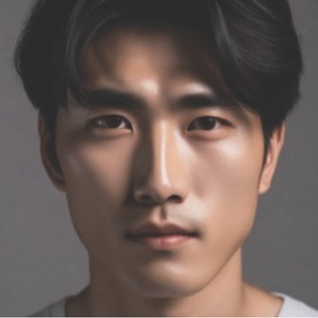
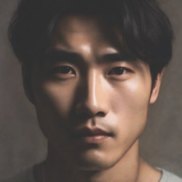
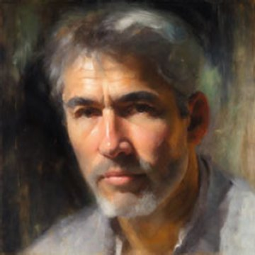
Shape from a mask (inset: target shadow)
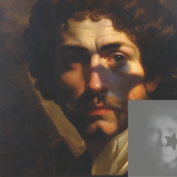
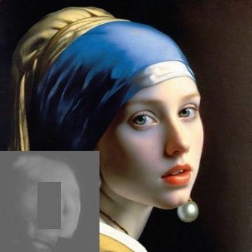
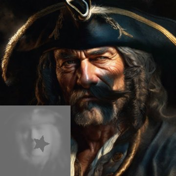
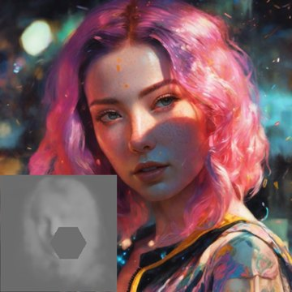
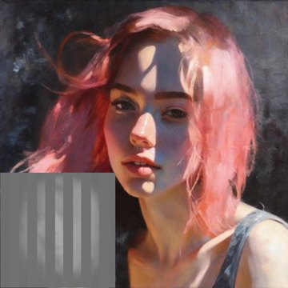
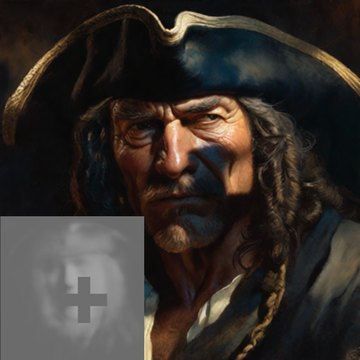
All portraits are generated from text prompts; the shadow is set while each one is generated (paper Fig. 1, 5 and the shadow-shape results).
The training portraits are synthetic relights, far from photoreal. That is enough to read out the lighting the pretrained model already encodes.
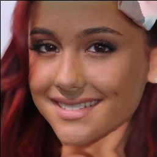
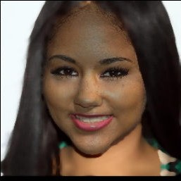
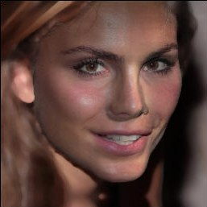
No new conditioning branch and no fine-tuning: a small estimator reads shadows from the frozen UNet's features, and generation is steered by optimizing only the latent.
Train two small estimators to read shadow, depth and identity from a frozen UNet, then use them to steer generation.
Drawn after the paper’s Fig. 2–5 and Appendix Fig. 12, with their own images. The portraits in “User input” and the final portrait are real outputs (paper Fig. 1; the final one is a different example from the maps shown during guidance). During guidance, ŝ converging to s* and the identity colour drifting and recovering are schematic.
Relighting methods shift identity or miss the light; Shadow Director keeps the person and the style.
Limitations
Citation